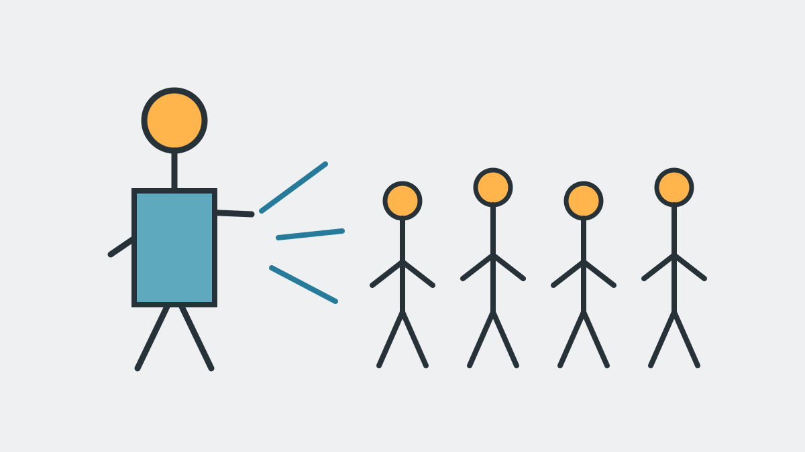
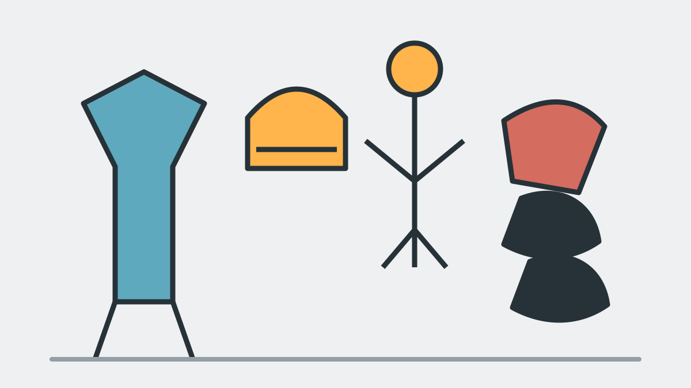
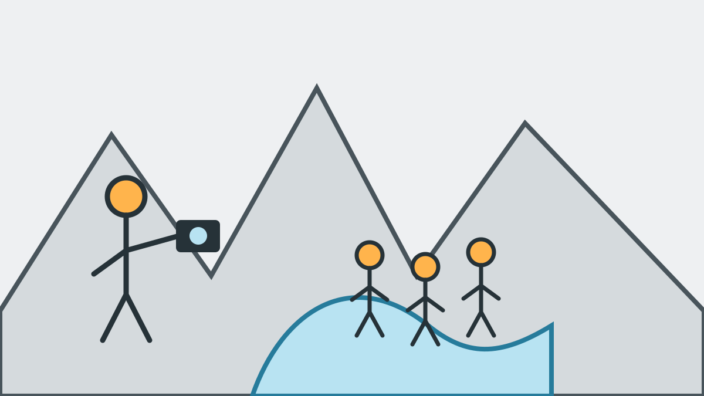

Sicherheit und Ausrüstung beim Canyoning
Canyoning ist ein Natursport mit Wasser, Fels und wechselnden Bedingungen. Eine geführte Tour reduziert Risiken durch fachliche Planung und Betreuung, macht den Sport aber nicht vollkommen risikofrei. Entscheidend sind die passende Tour, ehrliche Angaben der Teilnehmer, qualifizierte Guides, geeignete Ausrüstung und verbindliche Sicherheitsregeln.
Passende Tour statt größtmöglicher Action
Wir berücksichtigen Schwimmkenntnisse, Grundfitness, Trittsicherheit, Erfahrung, Ausdauer und Unsicherheiten der gesamten Gruppe. Wenn die gewünschte Tour nicht passt, empfehlen wir eine leichtere Alternative. Die eigene Schwierigkeitsskala unserer Touren dient nur der Orientierung und ist keine offizielle Norm.
Wetter, Wasserstand und Naturgefahren
Nicht Regen allein entscheidet über die Durchführung. Maßgeblich sind bestehendes oder drohendes Hochwasser, Strömung, Gewitterrisiko, Wasserstand, Naturgefahren und die Entwicklung im Einzugsgebiet. Tanja und Mario treffen die endgültige Sicherheitsentscheidung. Wir informieren die buchende Person so früh wie möglich, meistens bereits in der Woche vor der Tour.
Ist eine sichere Durchführung nicht möglich, prüfen wir zuerst eine Anpassung von Tour oder Startzeit, dann einen Ersatztermin und schließlich eine Erstattung bereits gezahlter Beträge, wenn keine passende Lösung zustande kommt.
Sicherheits-Einweisung und Guide-Anweisungen
Vor dem Einstieg erklären wir Verhalten im Wasser, Zeichen und Kommandos, Rutsch- und Sprungtechnik sowie den Ablauf beim Abseilen. Jeder Teilnehmer muss die Einweisung vollständig mitmachen. Die Anweisungen des verantwortlichen Guides sind verbindlich.

Teilnahmevoraussetzungen
- Sichere Schwimmkenntnisse.
- Normale Grundfitness oder die für die gewählte Tour notwendige höhere Fitness.
- Trittsicherheit auf nassem und unebenem Untergrund.
- Vollständige Teilnahme an der Sicherheits-Einweisung.
- Befolgen aller Guide-Anweisungen.
- Nüchterne Teilnahme ohne Alkohol oder berauschende Mittel.
Gesundheit und Medikamente
Relevante Herz-Kreislauf- oder neurologische Erkrankungen, Verletzungen, orthopädische Einschränkungen, Schwangerschaft und notwendige Medikamente müssen vorab persönlich mitgeteilt werden. Grundsätzlich entscheiden wir im Einzelfall. Bei einem ernstzunehmenden Risiko kann eine ärztliche Einschätzung erforderlich sein.
Alkohol und berauschende Mittel
Alkohol und berauschende Mittel sind vor und während der Tour ausgeschlossen. Bei Restalkohol oder einer anderen Beeinträchtigung dürfen wir Personen aus Sicherheitsgründen von der Teilnahme ausschließen. Bei einem selbst verschuldeten Ausschluss besteht kein Erstattungsanspruch. Bier und Radler werden ausschließlich nach Abschluss der Tour ausgegeben.
Sprünge und persönliche Grenzen
Jeder Sprung kann umgangen werden. Niemand wird zu einer Mutprobe gedrängt. Bei Höhen- oder Wasserangst bleiben wir eng bei der betreffenden Person und erklären die jeweilige sichere Variante. Unsicherheiten sollten vorab offen angesprochen werden, damit wir die passende Tour empfehlen können.
Vollständige Canyoning-Ausrüstung inklusive
Wir stellen die benötigte Ausrüstung passend zu Tour und Teilnehmer:
- Neoprenanzug.
- Neoprensocken.
- Helm.
- Canyoning-Gurt.
- Technische Seil- und Sicherheitsausrüstung.
- Spezielle Canyoning-Schuhe mit geeignetem Profil.
Die Ausrüstung wird nach der Nutzung gereinigt, getrocknet und regelmäßig kontrolliert. Auffälligkeiten oder Schäden sind dem Guide sofort mitzuteilen.

Das bringt ihr selbst mit
- Badekleidung.
- Handtuch.
- Trockene Wechselkleidung und Schuhe für danach.
- Persönlich benötigte Medikamente nach vorheriger Mitteilung.
- Bei Brille ein geeignetes Sicherungsband.
Fotos, Videos und eigene Geräte
Wir halten ausgewählte Gruppen-, Natur- und Actionmomente fest, sofern Sicherheit und Tourablauf es zulassen. Die Aufnahmen sind im Tourpreis enthalten und werden über einen privaten Download-Link bereitgestellt. Eine öffentliche Nutzung durch uns erfolgt nur mit gesonderter Einwilligung.
Eigene GoPros und Handys in geeigneter wasserdichter Hülle sind nach Rücksprache möglich und müssen sicher befestigt sein. Für persönliche Geräte gelten die gesetzlichen Haftungsregeln. Brillen werden auf eigene Verantwortung getragen, Kontaktlinsen sind in der Regel unproblematisch.

Tanja und Mario kennenlernen · Sicherheitsfrage persönlich stellen